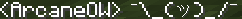
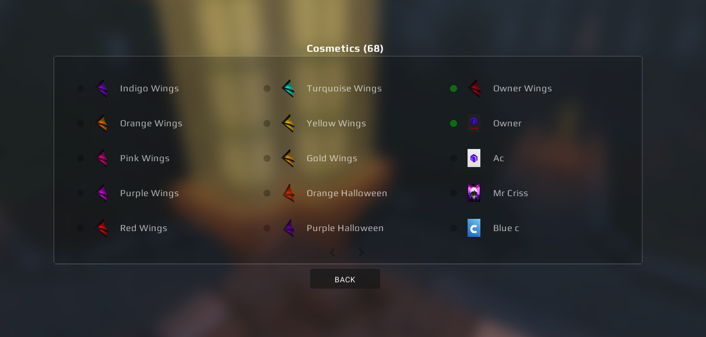
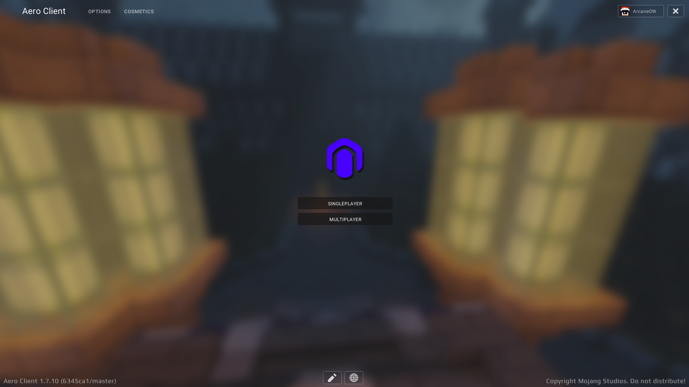
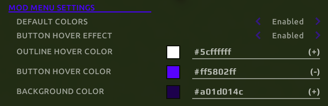
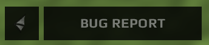
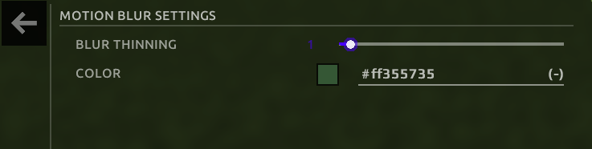

Powered by Aero API 1.0
Over the last couple of weeks, the team has been hard at work on making Aero Client more customizable and packed with more features to use.
Aero Client now has chat emojis, mod menu color changing, and many other new features! If you have any suggestions, you can give them to us in
our discord, or let us know on Twitter!
Client Update #1 [6345ca1/master] - 3/9/21
Chat Emotes
○ If your chat message contains /shrug, it will be replaced with the emoji!
FPS Improvements
○ General FPS Improvements have been added to the client to provide a smooth gameplay experience.
Menu Updates
Cosmetics Menu○ Aero Client's Cosmetics Menu has been given a fresh look, you can now choose from 15 cosmetics on each page.

Main Menu
○ The main menu has been given a new dark themed panorama background, and a mod menu editor.
Mod Menu
○ You are now able to change the colors of the mod menu, hovering colors, and outline colors.
○ The cosmetics button has been moved to the bottom left, you can also submit bug reports using the bug report button next to it.
Radio
○ Changed the "Filter" label to "Search Stations"
○ Fixed a crash with changing the radio volume while playing music.
Motion Blur
○ Added an icon for Motion Blur.

○ Removed scale from Motion Blur
○ Added Blur Thinning
○ Added ability to change the color.
